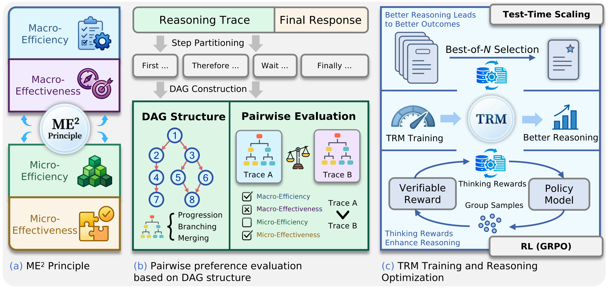
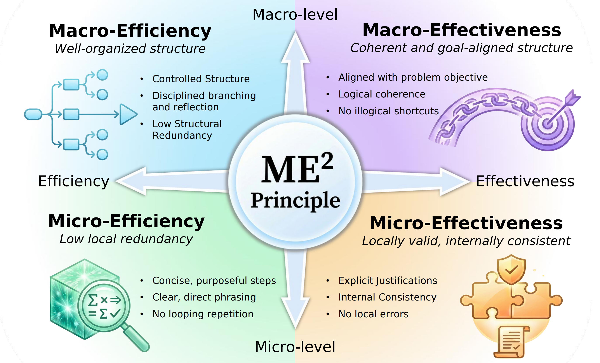
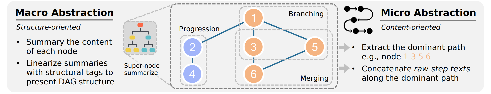
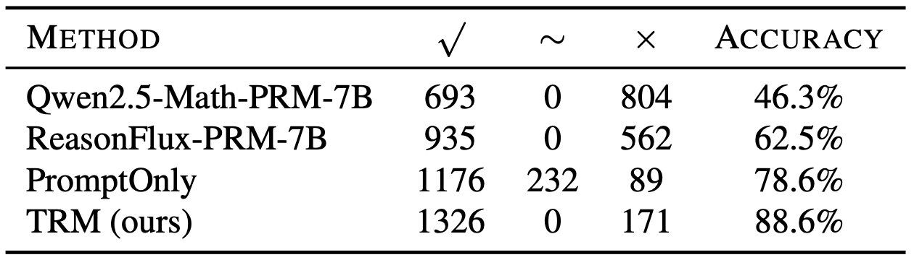
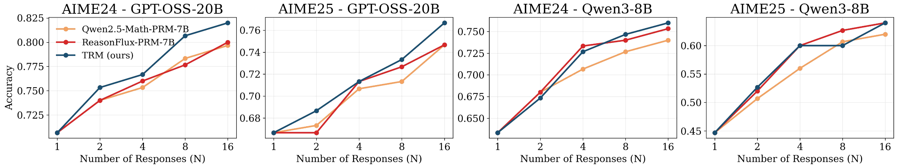
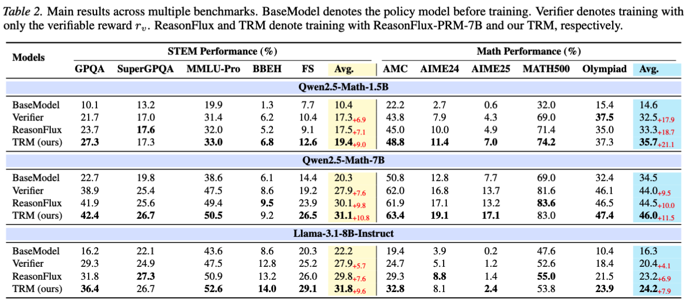
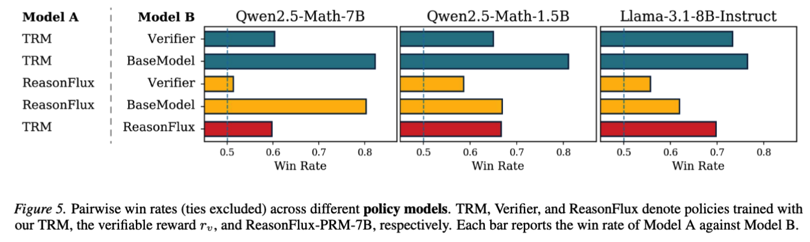

Characterizing
Define trace quality through macro/micro structure and efficiency/effectiveness objectives.
ICML 2026 Oral Presentation
Large Reasoning Models should do more than reach the right answer. TRM makes reasoning trace quality measurable and usable for test-time selection and reinforcement learning.
†Corresponding authors: Yafu Li and Yu Cheng

Overview
Large Reasoning Models now produce long traces with rich intermediate structure. A correct final answer can still hide redundant detours, fragile local steps, or reasoning paths that are hard to compare and optimize.
TRM organizes the problem around three questions: how to characterize reasoning quality, how to evaluate free-form traces, and how to optimize models with that signal. The resulting Thinking Reward Model scores reasoning trace quality; it complements final-answer verification rather than replacing it.
Define trace quality through macro/micro structure and efficiency/effectiveness objectives.
Turn free-form traces into DAGs so progression, branching, and merging are visible.
Train TRM on pairwise preferences and use it for selection and reinforcement learning.
Approach
TRM keeps the quality signal focused on the reasoning trace itself. It first names the quality dimensions, then obtains structured pairwise preferences, and finally trains a reward model for downstream use.
ME2 characterizes reasoning quality along two axes: macro versus micro granularity, and efficiency versus effectiveness.
Free-form traces are converted into DAGs, making progression, branching, and merging explicit before pairwise comparison.
TRM learns from preference pairs to score reasoning trace quality, providing a reward that is complementary to answer verifiers.
Characterization
ME2 gives a compact vocabulary for trace quality. It separates whether reasoning is globally organized from whether each local step is useful and valid.

Does the trace avoid unnecessary branches, repeated detours, and overlong global plans?
Does the overall structure stay aligned with the problem and move toward a solution?
Are individual steps concise, non-redundant, and placed where they actually help?
Are local calculations, claims, and transitions valid enough to support the trace?
Structured Evaluation
A trace is first split into atomic reasoning steps. Edges are then inferred from semantic dependencies, using the generation order as a topological order so later steps can depend on earlier ones, but not the other way around.

Data Construction
TRM-Preference is built from verified-correct reasoning traces so that supervision focuses on trace quality rather than final-answer correctness. For each problem, multiple reasoning models generate candidate traces; only traces whose final answers are accepted by rule-based verifiers enter the preference pipeline.
The remaining traces are compared with DAG-based pairwise evaluation. The final dataset contains 103K training preference pairs and 1.5K validation pairs, decoupling reasoning quality from final-answer correctness.
Evidence
TRM reaches 88.6% validation accuracy on pairwise trace preference, above ReasonFlux-PRM-7B (62.5%) and Qwen2.5-Math-PRM-7B (46.3%). Downstream experiments use this trace-quality score for Best-of-N selection and as an auxiliary RL reward.
Validation. 88.6% preference accuracy on TRM-Preference validation.
Test-time selection. Best-of-N selection brings up to 19.3% improvement.
RL. TRM usually adds 2% to 4% over verifier reward, including 3.9% STEM and 3.8% Math gains on Llama-3.1-8B-Instruct.




Resources
The project releases TRM-Preference, TRM-8B weights, and code for scoring, reward-model training, and TRM-guided policy optimization.
Reference
@article{zhang2026characterizing,
title={Characterizing, Evaluating, and Optimizing Complex Reasoning},
author={Zhang, Haoran and Li, Yafu and Wang, Zhi and Wang, Zhilin and Zhang, Shunkai and Qu, Xiaoye and Cheng, Yu},
journal={arXiv preprint arXiv:2602.08498},
year={2026}
}